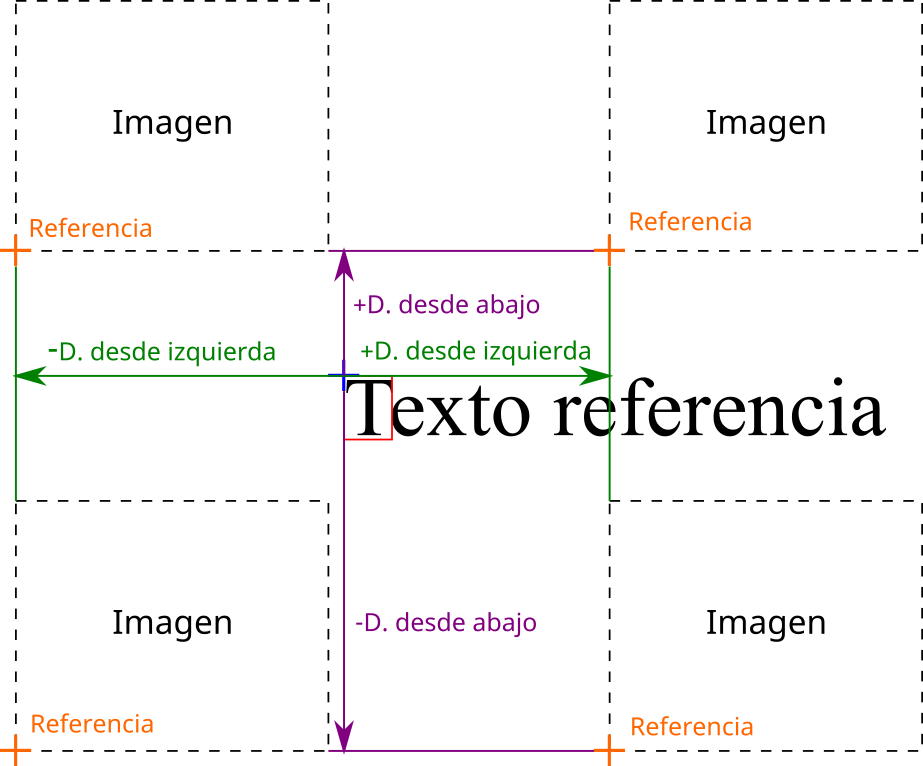
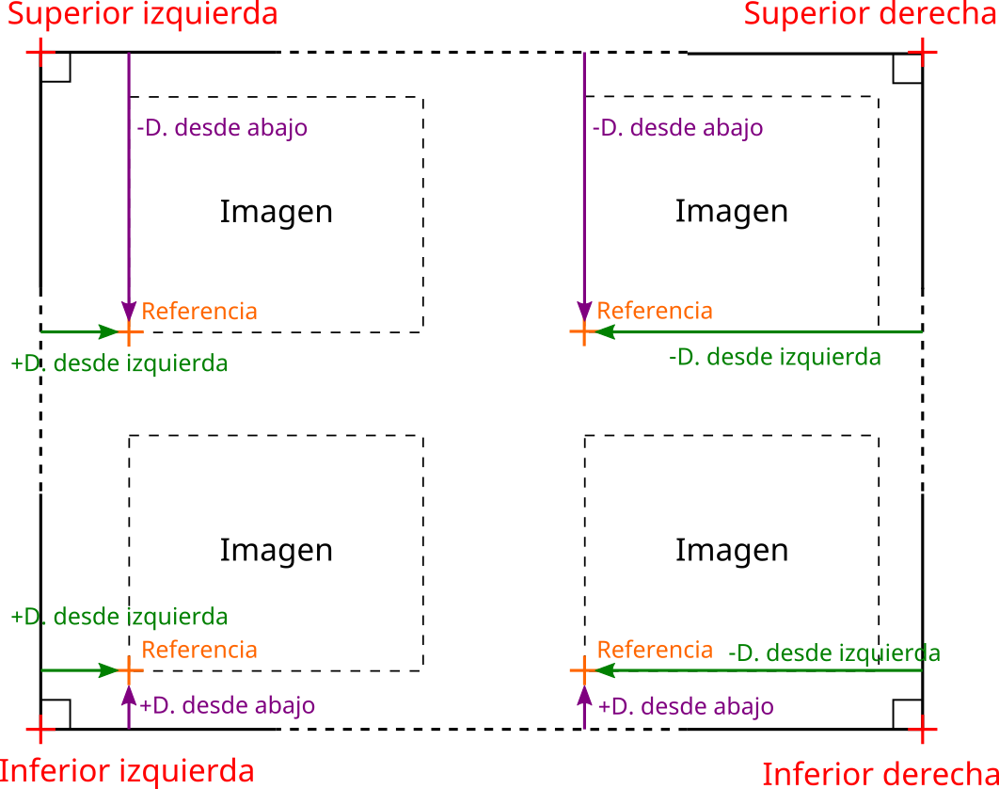

Cómo se calcula la posición de la imagen
Además de especificar el ancho y el alto de la imagen, el software tiene la opción de configurar Desplazamiento desde la izquierda y Desplazamiento desde abajo que son relativos a la posición de referencia que se establece en la esquina superior del texto o a la posición absoluta de la página de la esquina.
Las características para cada opción de posicionamiento son:
Referencia relativa al texto
Cuando la referencia es relativa al texto y el texto ingresado se encuentra en el documento, el punto de referencia se establece en la esquina superior izquierda del primer carácter del marcador de posición. Luego, en relación con esta posición, la imagen se posiciona en la página. Si hay varios lugares donde se encuentra el texto, la imagen se inserta solo en la primera aparición.

Referencia relativa a la página
En este caso, la referencia se establece en una posición absoluta en la página que es una de sus cuatro esquinas. Luego, en relación con este punto de referencia, el software inserta la imagen.
